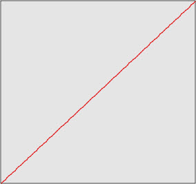
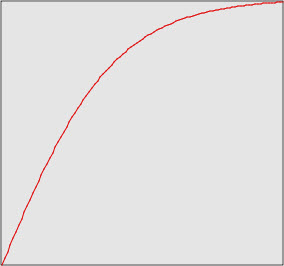
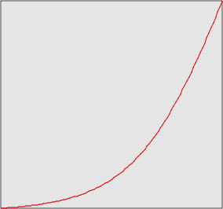
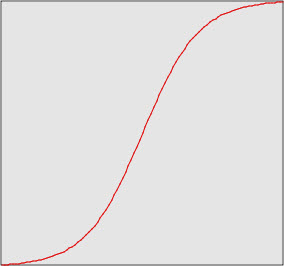
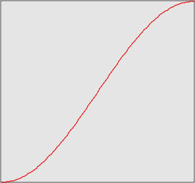
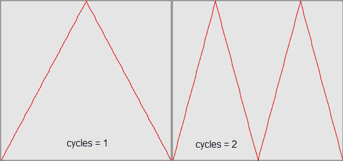
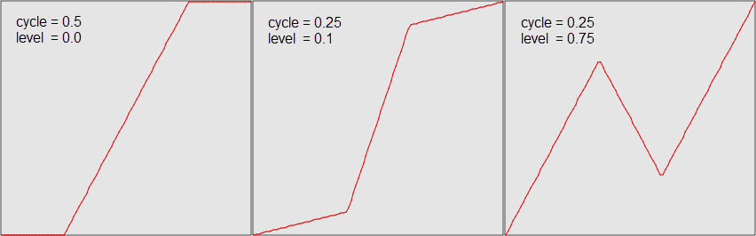
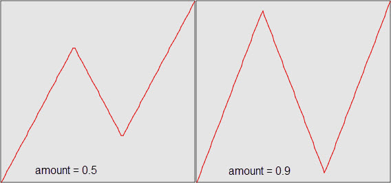
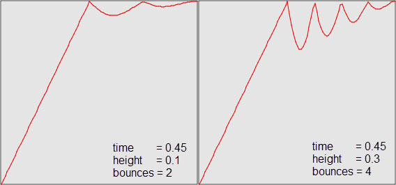

As previously described, a tweener object manipulates the flow of time during an animation. The Facets animation system includes the following predefined set of tweener classes and objects:
| Class or object | Module |
|---|---|
| Tweener | facet.animation.tweener |
| LinearTweener | facet.animation.tweener |
| NoEasing | facet.animation.tweener |
| EaseInTweener | facets.animation.ease_in_tweener |
| EaseIn | facets.animation.ease_in_tweener |
| EaseOutTweener | facets.animation.ease_out_tweener |
| EaseOut | facets.animation.ease_out_tweener |
| EaseOutEaseInTweener | facets.animation.ease_out_ease_in_tweener |
| EaseOutEaseIn | facets.animation.ease_out_ease_in_tweener |
| EasyTweener | facets.animation.easy_tweener |
| CycleTweener | facets.animation.cycle_tweener |
| RampTweener | facets.animation.ramp_tweener |
| RetrogradeTweener | facets.animation.retrograde_tweener |
| BounceTweener | facets.animation.bounce_tweener |
The Tweener class defines the base class from which all other tweener classes derive. The Tweener class is a concrete class that implements a basic linear tween, which performs no time manipulation at all. To emphasize this, LinearTweener is provided as a synonym you can use instead of Tweener. The same module also defines a NoEasing attribute, which is simply a predefined and reusable Tweener instance.
The Tweener class defines the following two facets:
The Tweener class also implements the single public method:
The at method defines the tweening function described above. Note that it is always a mapping of a time value between 0.0 and 1.0 to another time value between 0.0 and 1.0, where 0.0 corresponds to the start time of the animation and 1.0 corresponds to the end time of the animation. This is true no matter how long the animation runs. The animation system handles the conversion of time from the normalized [0.0, 1.0] time range to actual animation time, thus simplifying the task of creating new tweening functions.
Basically, creating a new tweener class boils down to implementing a new at method that implements the desired tweening function. As a result, tweener subclasses typically do not implement any new public methods, and only define new facets used as parameters in computing the function defined by the at method.
As mentioned previously, a tweener manipulates the flow of time in an animation. The default at method defined by the Tweener class simply returns the input time unchanged:
def at ( self, t ):
return t
If you want to implement a simple tweener that makes time run backwards (like playing a movie in reverse) you could do so using the following at method definition:
def at ( self, t ):
return (1.0 - t)
In essence, such a tweener would make any animation it was applied to run from its end value to its start value without otherwise affecting the flow of time (i.e. without adding any slow motion or fast forward effects).
To help illustrate what effect a tweener has on an animation, we provide a plot of the tweener function over the time range from 0.0 to 1.0 as shown in the following figure for the base Tweener class:
All of these plots are taken directly from the Animation Lab demo in the Graphics and Animation section of the Facets UI demo. We highly recommend trying the demo for yourself to become more familiar with the effect that each tweener type has on an animation. You can even compose tweeners and create and try your own tweening classes directly within the demo.
The EaseInTweener class defines a classic animation ease-in effect, where an animation starts out relatively fast and then slows down as it nears the end of the animation, as illustrated in the following plot:
The same module also defines an EaseIn attribute containing a predefined and reusable instance of EaseInTweener.
The EaseOutTweener class defines a classic animation ease-out effect, where an animation starts out relatively slow and then speeds up as it nears the end of the animation, as illustrated in the following plot:
The same module also defines an EaseOut attribute containing a predefined and reusable instance of EaseOutTweener.
The EaseOutEaseInTweener class defines a classic animation ease-out/ease-in effect, where an animation starts out relatively slow, speeds up, and then slows down again as it nears the end of the animation, as illustrated in the following plot:
The same module also defines an EaseOutEaseIn attribute containing a predefined and reusable instance of EaseOutEaseInTweener.
The EasyTweener is a variation on the EaseOutEaseIn tweener that uses a different easing function, as illustrated in the following plot:
The CycleTweener basically makes an animation play forward linearly, then backward linearly, the number of times specified by its cycles facet. This is illustrated in the following plot which shows the tweener function for cycles values of 1 and 2:
The RampTweener divides the animation cycle into three phases defined using the following two facets:
The middle (or ramp) phase lasts for a time specified by cycle. The beginning and ending phases last for an amount of time specified by (1.0 - cycle)/2.0. The first phase starts with an output value of 0.0 and moves linearly to the output value specified by level. The ending phase does the converse, starting with an output value of 1.0 - level and moving linearly to 1.0 at time 1.0. The middle phase also moves linearly, starting with an output value of level and moving to 1.0 - level.
This is more easily understood looking at the following plot, which shows the function for several different values of cycle and level:
The Retrograde tweener does a simple linear animation from its start value to its end value, but reverses the flow of time for a while during the middle part of the animation. The only control facet provided is:
The following plots illustrate the type of effect that results for different values of amount:
The BounceTweener attempts to provide a bouncing ball type effect by appearing to bounce one or more times upon reaching its end value. The bounce is controlled by the following three facets:
The effect is illustrated in the following plots, which show the results for different facet settings:
